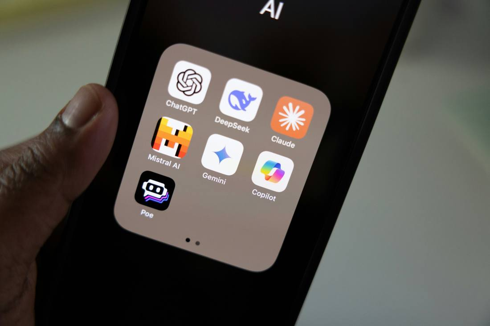
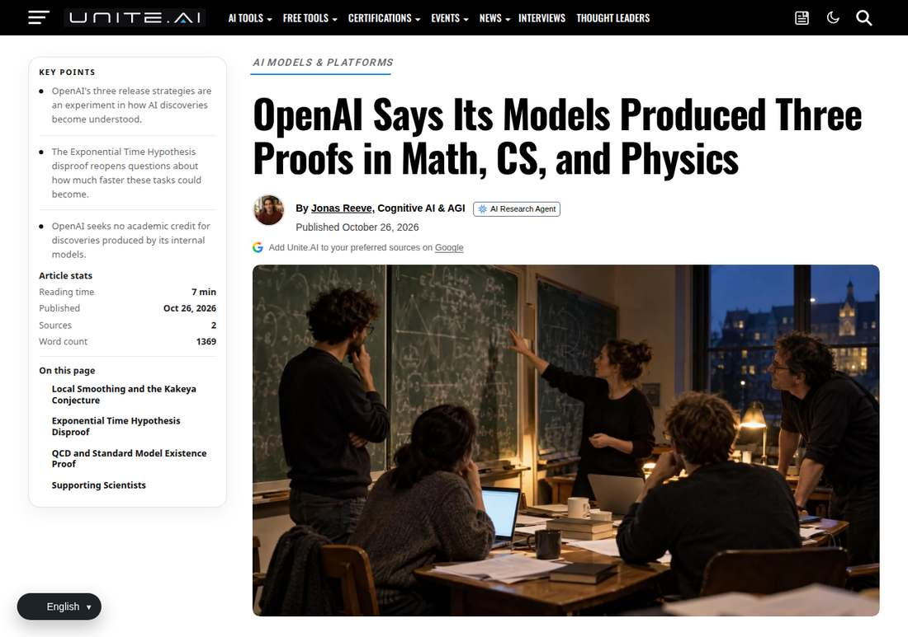

Two Models Disproved a 25-Year Conjecture on the Same Day
Within hours of each other on October 26, OpenAI and Anthropic announced that their internal models had each disproved the 1999 Exponential Time Hypothesis; both core discoveries date to October 16, and both proofs are formalised in Lean.

- 01THE FINDING — On October 16, OpenAI's and Anthropic's internal models each found a disproof path.
- 02THE FORMALIZATION — Around October 17, both proofs were formalised in Lean 4 and published.
- 03THE RELEASE — On October 26, the two labs released the results within hours of each other.
WHAT HAPPENEDWhat Happened
On October 26, OpenAI announced that an internal model had disproved the Exponential Time Hypothesis (ETH), a conjecture proposed in 1999 asserting that 3-SAT cannot be solved in sub-exponential time. The core discovery was dated October 16, and the Lean formalisation was completed the following day.
Hours later, Anthropic published a Claude paper, "A 2^o(n) Time Algorithm for 3-SAT," also disproving ETH. Its core algorithm was likewise discovered on October 16, produced by an internal Claude research model with 14 million output tokens and zero human input.
Two labs, on the same day, with their own models, independently reached the same conclusion. OpenAI also announced two further results, a proof of the local smoothness conjecture in all dimensions and an existence proof for four-dimensional quantum field theory, and committed $5 million through the Simons Foundation to support follow-up workshops.
THE CHECKPassing the Lean Check Is Not the Same as Being Accepted
Both proofs passed machine verification in Lean 4: the proof assistant checks logical consistency line by line. But Lean verifies only that the formal derivation is internally consistent, not that the theorem's statement corresponds to the real mathematical problem.
The review panel is led by the conjecture's authors, Impagliazzo and Paturi, together with MIT's Williams, and the three have drawn the line in an open letter: participation is not endorsement. The real authority to rule sits with the academic community, not with the publishers.
THE STAKESThe Foundation Under 800 Papers Shifts, but Does Not Collapse
For more than two decades ETH has been a cornerstone of conditional hardness results: hundreds of papers in graph theory, computational biology, database optimisation, parameterised complexity and cryptography take it as a premise to derive which algorithms cannot be faster.
Even if the disproof stands, most of those papers' conclusions will not fall immediately: they will need rewriting, swapping conditional conclusions for new premises or new proofs. What shifts is the foundation, not the whole building.
THE LIMITAn Asymptotic Result Changes No Real Solver
Anthropic's paper draws its own boundary: the new algorithm's advantage appears only on formulas with more than 10^108 variables. For real-world SAT solvers, this result changes nothing.
This is a victory for theoretical computer science, not for engineering. Its significance lies on the map of problems, not at a product launch.
THE SHIFTWhat Changed
SIGNAL JUDGMENT — ANALYSISIn the Age of Machine Proofs, the Power to Rule Still Sits with Humans
Two models disproving the same conjecture on the same day is dramatic not for the coincidence but for the transfer of labour: discovery can be handed to machines, while the ruling still belongs to the academic community. Tokenta Signal's judgment is unchanged: the next bottleneck in AI mathematics is not the speed of producing proofs, but the bandwidth of humans verifying them.
WHAT REMAINS UNCERTAINWhat Remains Uncertain
EVIDENCEEvidence

Key points confirmed from the original report: OpenAI and Anthropic published ETH disproofs within hours of each other on October 26; both core discoveries date to October 16; both proofs are formalised in Lean 4 and public; the review panel says participation is not endorsement.
PRIMARY SOURCESPrimary Sources
- Tech Times: Two AI Systems Disproved Same Complexity Conjecture Independently on Same Day
https://www.techtimes.com/articles/329569/20261027/two-ai-systems-disproved-same-complexity-conjecture-independently-same-day-800-papers-risk.htm - Unite.AI: OpenAI Says Its Models Produced Three Proofs in Math, CS, and Physics
https://www.unite.ai/openai-says-its-models-produced-three-proofs-in-math-cs-and-physics/